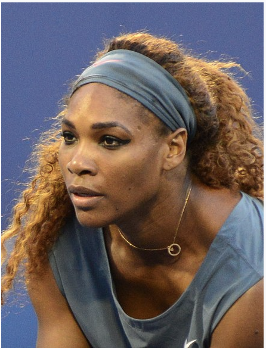

I love to play tennis. After coronavirus I couldn’t play that much.
Now I get to play once a week. My coach is very nice and I get to play with my friends.
Tennis is also fun to watch. You can see famous tennis players play on tv.
My favorite tennis player is Serena Williams. Tennis is a fun sport everyone should try.
Serena Jameka Williams (born September 26, 1981)[1] is an American professional tennis player and former world No. 1 in women's single tennis. She has won 23 Grand Slam singles titles, the most by any player in the Open Era, and the second-most of all time behind Margaret Court (24). The Women's Tennis Association (WTA) ranked her world No. 1 in singles on eight separate occasions between 2002 and 2017. She reached the No. 1 ranking for the first time on July 8, 2002. On her sixth occasion, she held the ranking for 186 consecutive weeks, tying the record set by Steffi Graf. In total, she has been No. 1 for 319 weeks, which ranks third in the Open Era among female players behind Graf and Martina Navratilova.
